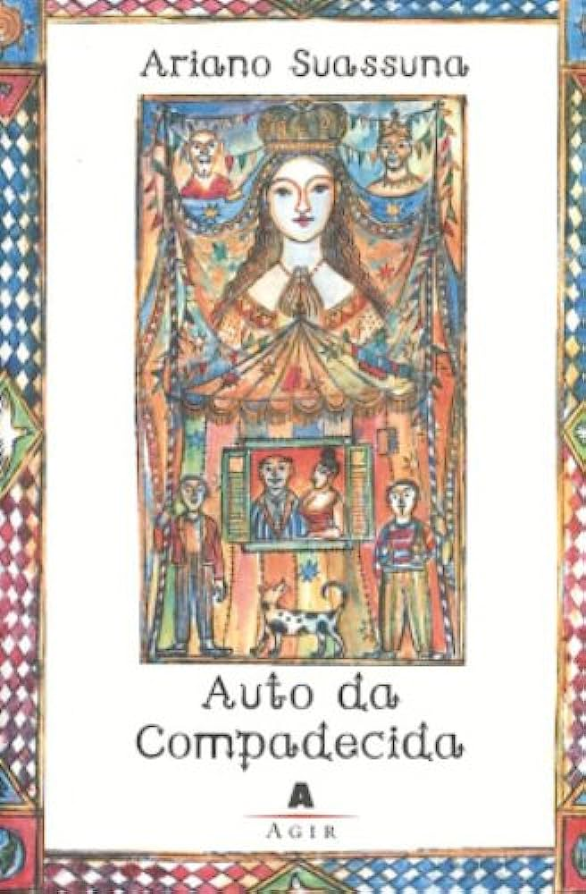
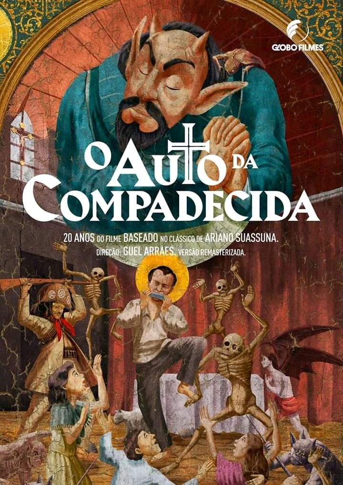

Who was Ariano Suassuna?
Film and television adaptations of O Auto da Compadecida
The play has been performed and adapted several times since its first production:
- A Compadecida (1969 film)
- Os Trapalhões no Auto da Compadecida (1987 film)
- Auto da Compadecida (1999 miniseries)
- O Auto da Compadecida (2000 film) (English title: A Dog’s Will)
A dog's Will (2000)
Storyline
João Grilo and Chicó are two very poor and clever Brazilian Northeasterners who struggle for survival and trick people to get by. After meeting the wealthy Rosinha, both hope to finally strive in life, but their plans are interrupted by the arrival of an outlaw.